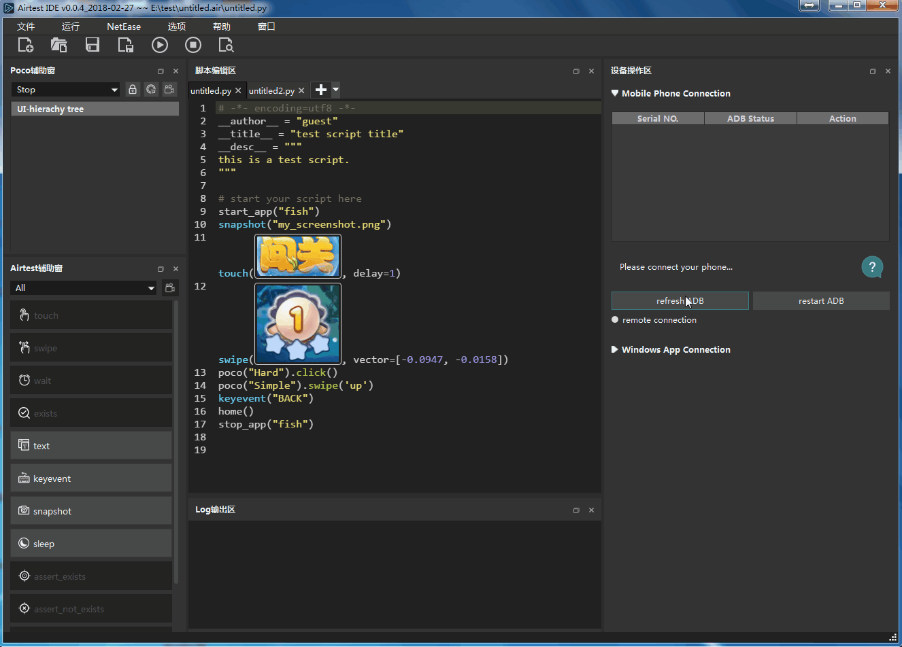
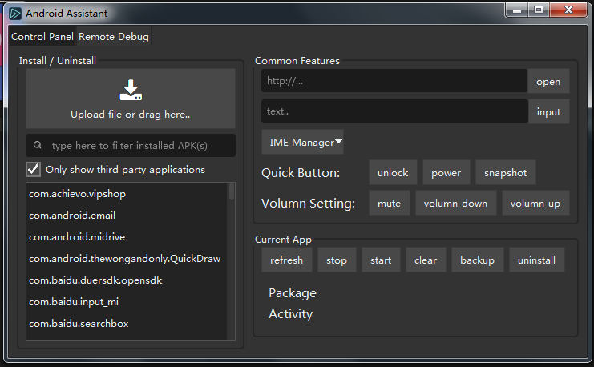

版权声明：允许转载，但转载必须保留原链接；请勿用作商业或者非法用途
通过阅读本节教程，你将了解到以下内容：
--device Android:///的内容使用AirtestIDE对Android应用进行自动化测试时，第一步就需要连接Android设备。
请查阅我们的设备连接文档里的指引，安装好驱动、打开手机里的开发者选项、允许USB调试选项后，用USB线连上手机并在AirtestIDE中尝试连接。
如果遇到了问题，请查阅Android连接常见问题文档，根据里面提供的自查步骤排查问题，有些品牌手机有专属的选项需要另行开启（例如小米、Vivo/Oppo），请同样查阅对应品牌的注意事项来避免问题。
目前我们支持市面上几乎绝大多数Android手机、Android模拟器（模拟器连接教程请查阅这里），也可能支持少部分特殊的基于Android系统的硬件设备（这类设备由于种类繁多，我们无法一一进行测试和支持，如果有兼容需求请联系开发组）。
在成功连上手机后，我们就能够在AirtestIDE里操作手机画面，就像下图中这样，接下来就可以开始用这台手机编写脚本了。

有少数非手机的Android设备（例如智能电视、智能后视镜等），直接点击connect按钮不能连接，但是可以尝试通过勾选connect下拉菜单中的选项来尝试连接。
例如，我们的默认连接方式不支持模拟器，因此在连接模拟器时，需要先勾选Use Javacap选项（部分品牌模拟器还要同时勾选Use ADB orientation）。这里connect下拉菜单的三个选项，是截屏、旋转和点击的三个备选方案，在默认方案无法生效的时候，使用这3个备选方案可能就可以支持设备了。
注意：部分品牌手机不支持某个功能，可能仅仅只是因为选项没有开启，例如小米手机必须要开启了允许模拟点击才能够在AirtestIDE中使用默认方式点击手机（速度更快，效果更好）。如果是正常的手机设备，遇到问题时请尽量先查阅文档排查问题。这几个备选方案的效率都比默认方案低，只有部分特殊的Android设备才需要使用到备选方案。
当我们在AirtestIDE里连上手机并编写完脚本，当点击运行脚本按钮时，默认会在运行时的命令行里使用当前已经在AirtestIDE里连接的手机，就像这样：
"D:\AirtestIDE\AirtestIDE" runner "untitled.air" --device Android://127.0.0.1:5037/F8UDU16409004135 --log "D:\log"其中--device Android://127.0.0.1:5037/F8UDU16409004135就是当前使用的本地手机，它将我们这台设备号为F8UDU16409004135的手机名称告诉Airtest，让它明白我们需要使用这台手机。
我们也可以在命令行中不填写具体的手机设备号，用--device Android:///这样的内容来表示在当前连接的一台Android设备上运行即可，无论它的设备号是什么。
如果在命令行中，完全不填写--device，默认将会不连任何设备来运行代码，那么在运行到需要有设备才能跑的代码时将会报错（例如touch语句必须要连上设备才能运行）。
如果希望在脚本中通过代码进行设备连接，可以使用connect_device接口，或是在auto_setup接口中传入devices参数，请参考二、Airtest介绍脚本入门-如何在Python脚本中使用Airtest里的相关内容。
在刚才的命令行中使用的 --device参数，传入的是一个设备字符串，以安卓设备为例，字串完整定义如下:
Android://<adbhost[localhost]>:<adbport[5037]>/<serialno>其中，adbhost是adb server所在主机的ip，默认是本机127.0.0.1，adb port默认是5037，serialno是android手机的序列号。
这里提供一些常见的填写范例供大家参考：
# 什么都不填写，会默认取当前连接中的第一台手机
Android:///
# 连接本机默认端口连的一台设备号为79d03fa的手机
Android://127.0.0.1:5037/79d03fa
# 用本机的adb连接一台adb connect过的远程设备，注意10.254.60.1:5555其实是serialno
Android://127.0.0.1:5037/10.254.60.1:5555
# 模拟器等特殊设备、使用了连接参数时：
# 模拟器连接，勾选了Use javacap模式
Android://127.0.0.1:5037/127.0.0.1:7555?cap_method=JAVACAP
# 所有的选项都勾选上之后连接的设备，用&&来连接多个参数字符串
Android://127.0.0.1:5037/79d03fa?cap_method=JAVACAP&&ori_method=ADBORI&&touch_method=ADBTOUCH更多注意事项、其他平台范例、命令行中使用了&符号应该如何处理等，都可以在文档关于设备字符串中找到。
Airtest支持一个脚本中连上多台手机，但是需要注意的是，并不是能够自动让这一个脚本在多台手机上跑，而是能够在脚本中使用这几台手机，实现一些类似于多机协作的效果（例如让两台手机登录同一个APP并相互“添加好友”）。
假如我们现在正在使用AirtestIDE编写脚本，已经同时连上多台手机，在运行脚本的时候AirtestIDE将会自动在命令行中添加多个--device参数，把当前连接的手机都告诉脚本，无需其他额外操作。
或者也可以直接在脚本里使用多个connect_device语句，分别传入手机连接串信息即可：
from airtest.core.api import connect_device
dev1 = connect_device("Android://127.0.0.1:5037/serialno1") # 连上第一台手机
dev2 = connect_device("Android://127.0.0.1:5037/serialno2") # 第二台手机在连接多台手机后，我们能够在Airtest的全局变量G.DEVICE_LIST中看到所有当前连接中的设备，可以使用set_current接口在多台设备之间切换。
print(G.DEVICE_LIST) # 此时设备列表为[dev1, dev2]
# 传入数字0切换当前操作的手机到第1台
set_current(0)
# 切换当前操作的手机到序列号为serialno2的手机
set_current("serialno2")
# 使用device()接口获取当前连接中的设备Android对象
current_dev = device()在二、Airtest介绍与脚本入门-平台相关的接口一节中，我们提到了每个接口支持的平台可能各不相同，而Android支持的接口是最全面、最丰富的。
基本上airtest.core.api中的接口（文档地址），在Android平台上都可以直接使用，例如：
# 清理某个应用数据
clear_app("org.cocos2d.blackjack")
# 启动某个应用
start_app("org.cocos2d.blackjack")
# 传入某个按键响应
keyevent("BACK")除了在airtest.core.api中提供的跨平台接口之外，Android设备对象还有很多内置的接口可以调用，我们可以在airtest.core.android.android module这个文档中查阅到Android设备对象拥有的方法，然后像这样调用：
dev = device() # 获取到当前设备的Android对象
print(dev.get_display_info()) # 查看当前设备的显示信息
print(dev.list_app()) # 打印出当前安装的app列表在Android设备的测试脚本中，有时候我们需要输入一些ADB指令，如果在普通的Python脚本中想要调用ADB指令，也许需要用到subprocess等模块单独启动进程运行命令行才能实现。
但是在Airtest脚本中，调用ADB指令是非常简单的事情：
# 对当前设备执行指令 adb shell ls
print(shell("ls"))
# 对特定设备执行adb指令
dev = connect_device("Android:///device1")
dev.shell("ls")
# 切换到某台设备，执行adb指令
set_current(0)
shell("ls")在使用AirtestIDE连接Android手机时，我们还提供了一个简单的手机助手功能，使用方法在这里。
在连上Android手机后，点击设备窗口右上角的工具图标，在展开下拉菜单中，选择Show assistant dialog 即可打开安卓手机助手。

在安卓手机助手中，我们提供了以下几种功能：
希望我们的Android手机助手在大家使用Android手机时，起到良好的辅助作用，如果有BUG或者功能建议，请反馈至Github。